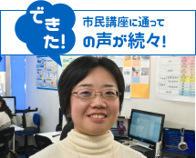

イオンタウンユーカリが丘教室からのお知らせ
- 写真
イオンタウンユーカリが丘教室
- 資格を取って就職＆転職を有利に♪
パソコン市民講座 イオンタウンユーカリが丘教室 のホームページへようこそ！
■当教室は、初心者のためのパソコン教室です。
・パソコンをお持ちでない、購入されたばかりなど、これからパソコンをはじめたい初心者の方
・ワード、エクセル、パワーポイントの使いこなし、パソコン検定の資格取得など、仕事にパソコンを活かしたい方
・インターネット、メール、ブログなど、趣味の世界や交流の輪を広げたい方
もし、この中のどれか1つでも当てはまるものがあれば、まずは無料体験をおすすめします。
無料体験は随時行なっています。ご連絡なしの来校も大歓迎ですよ！！■「シニア特別クラス」開講で、ご年配の方も安心のパソコン教室です。
パソコン市民講座は、初心者の方だけでなく60歳以上のシニアの方も多く通われているアットホームなパソコン教室です。
特に、ご年配の方でもしっかり着実にパソコンスキルを身に付けていただける「シニア特別クラス」の開講など、授業についていけるかな？と不安のある方でも、安心して受講していただけます。
パソコンを学びたいという同じ目的の方々ばかりです。
当教室で、仲間作りもかねてパソコンを通じた新しい世界を拡げてみませんか？■インストラクターの先生も大募集！
当教室では、パソコンインストラクターの先生も大募集しています。
「教える」という喜びとやりがいあふれる仕事をしてみませんか？まずは、お気軽にお問い合わせください。
インストラクター一同、皆様からのお電話、ご来校を心よりお待ち申し上げております。
受講生の声
-
パソコンの世界が広がりました！

パソコン検定3級は合格しましたが、デジカメで撮った写真をパソコンで編集・加工するのが楽しくなり、フォトブック・カレンダー・うちわ・キーホルダーの作成イベントに参加して楽しんでいます。
エクセル・ワード以外にもパソコンの世界が広がりました。
インストラクターより
仕事をしながらパソコン検定の資格を取得された頑張り屋さんです。写真はプロ並みでイベントにはいつも参加され、パソコンを幅広く楽しまれていますね。爽やかな笑顔に教室中が包まれ、インストラクターも受講生さんも心が和みます。続きを見る
-
パソコンを楽しんでいます

60才になり定年を向かえて時間が出きたのでパソコン市民講座に入りました。覚えが悪く上達しないのですが自分のペースで勉強できるので今でも続けています。
インストラクターより
中村さんは長く教室に通ってきていただいて、いつも熱心に受講されていらっしゃいます。勉強したことを忘れないようにご自宅でも復習をかかさずされている様子でパソコンが楽しみの一つになっていらっしゃるとか。茶目っ気たっぷりのかわいい笑顔にインストラクターも癒されています。続きを見る
-
パソコンが怖くなくなりました

初めはパソコンの電源のボタンを押すのも怖かったのですが、最近はパソコンに触るのが怖くなくなりました。自宅でもプレミア倶楽部を家族一緒に楽しんでいます。これからは苦手なエクセルにも挑戦していきます。
インストラクターより
桜井さんはパソコン検定合格という目標を持って授業に臨んでいらっしゃるので、いつも授業に集中して真剣に取り組んでいらっしゃいます。不安な点を残さず、必ず理解してから進むことにより、確実に身につき自信に繋がっています。だから、パソコンが怖くなくなったのでしょう。いつもさわやかな風のように教室にいらっしゃって、教室の空気を一新してくれます。続きを見る
-
毎日、パソコンに触れて充実した日々を送っています

今まで自己流でパソコンを使っていて、好きなテニスのサイトを見たり、友人とメールをしたり、グーグルアースで世界を覘いたり、スカイプで海外の友人とテレビ電話をしたりしていました。でもワードやエクセルはこの教室に入って教えてもらい、パソコンがすごく楽しくなってきました。インストラクターの方達も、すごく気さくに教えて下さるので何回も手をあげて、すごく助かっています。まだまだパソコンの1/1000も使っていないと思います。毎日、パソコンに触れて充実した日々を送っています。海外にもよく行くので本当～に便利です。
インストラクターより
渥美さんは、浜松可美教室で一番元気で輝いていらっしゃいます。パソコンに対する向上心も高く、応用力もあり、いつも自信に満ち溢れています。まだまだ1/1000も使っていないと謙遜していらっしゃいますが、パソコンの楽しさ、便利さを十分に熟知し、使いこなしている姿には脱帽です。続きを見る

-
教室情報
-
合格者の声
-

会社の看板、ディスプレイを作ったら、社長に評価をいただきました。また、社内行事の資料や、旅行のしおり作成も社員に好評！統計表や、業務に必要な管理表も、エクセルを大活用し業務に役立っています。まだまだ知らないエクセル関数があるので、今のパワーポイント技能認定試験が終わったら、エクセル技能認定試験をトライしようと考えています。元来、飽きっぽくてすぐに挫折する私ですが、パソコン市民講座だけは例外です。教室の先生もとてもアットホームで良い方なので楽しく続けられています
-
タメになる！おすすめ
ワンポイントレッスン動画-
「セルの書式を置換しよう」
2016/11/11 更新
-
プレミア倶楽部
-
市民講座だけのお得いっぱいな会員システム
教室ブログ
-
市民講座だけのお得いっぱいな会員システム